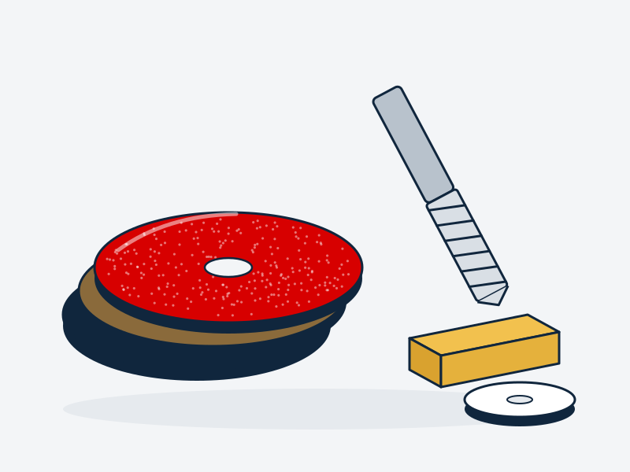
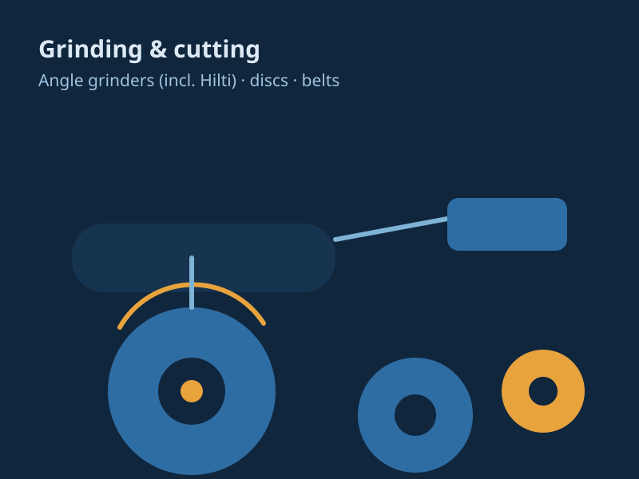
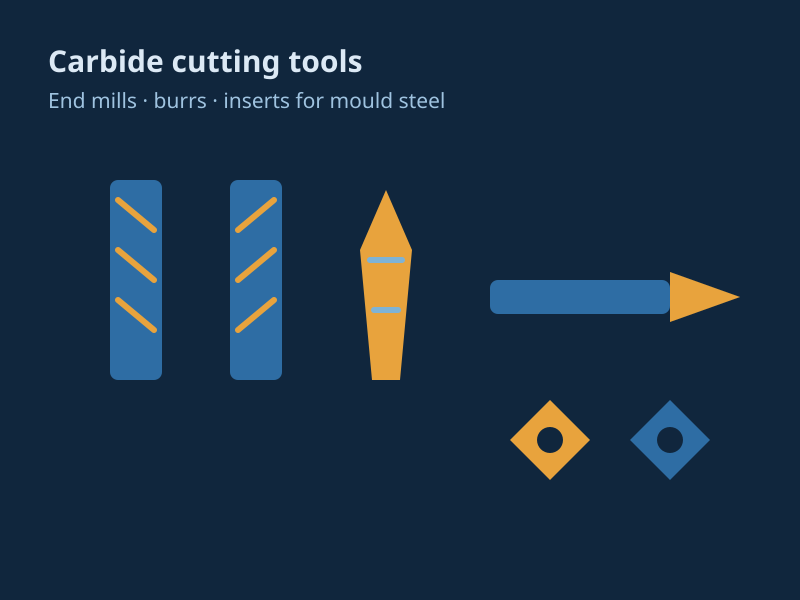
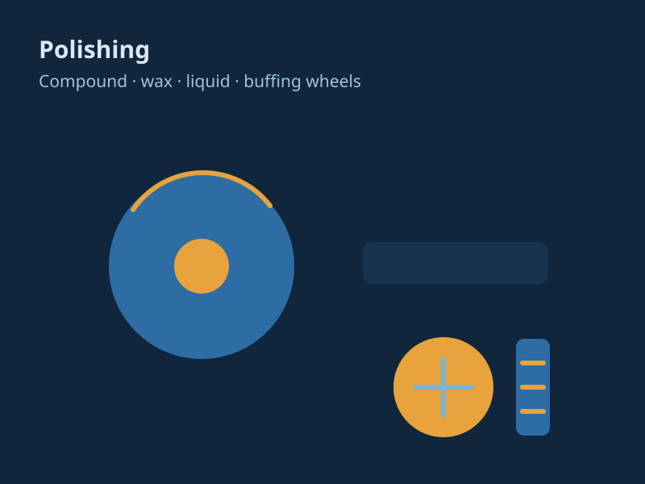
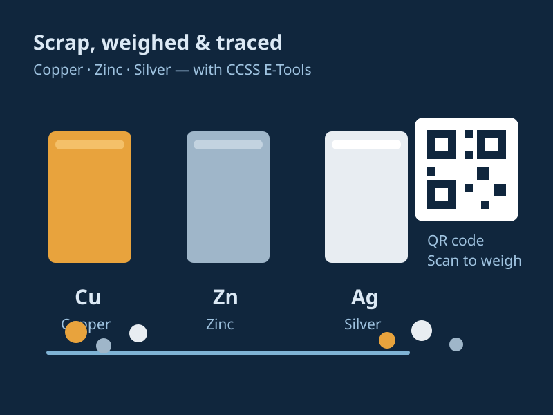

Thương mại
Vật tư mài và đánh bóng
Bên cạnh hệ thống cân và vật tư điện, HearS cung cấp vật tư tiêu hao cho xưởng cơ khí và xưởng làm khuôn: vật tư mài, vật tư đánh bóng và dụng cụ cắt gọt. Theo hình thức hợp tác cùng CCSS (E-Tools), HearS cũng cung cấp phần mềm MES cho cân, phế liệu và kiểm soát chất lượng — xem mục MES bên dưới.
- Vật tư mài
- Dụng cụ cắt gọt cho khuôn nhựa
- Đánh bóng
- MES — cân & phế liệu

Nhóm hàng chúng tôi cung cấp
Vui lòng cho chúng tôi biết vật liệu, máy và độ bóng bề mặt Quý khách cần, chúng tôi sẽ đề xuất mặt hàng phù hợp.
Vật tư mài
Đĩa nhám, giấy nhám tờ và băng nhám để mài, đánh bavia và xử lý bề mặt.
Dụng cụ cắt gọt cho khuôn nhựa
Dao cắt gọt để gia công thép khuôn và điện cực khi làm khuôn ép nhựa.
Vật tư đánh bóng
Kem, sáp, dung dịch và bánh vải đánh bóng cho khuôn và chi tiết kim loại. Xem nhóm đánh bóng bên dưới.
Vật tư xưởng khác
Các vật tư liên quan theo yêu cầu, báo giá theo từng trường hợp.
Nhóm vật tư đánh bóng
Vui lòng cho chúng tôi biết vật liệu, độ bóng cần đạt và máy hoặc dụng cụ đang dùng; chúng tôi sẽ đề xuất cách kết hợp phù hợp.
Kem đánh bóng
Dạng kem hoặc thỏi có hạt mài mịn, dùng với bánh vải hoặc dụng cụ đánh bóng để làm bóng khuôn và chi tiết kim loại.
Sáp đánh bóng
Sáp dạng thỏi bôi lên bánh vải khi đánh bóng, chủ yếu cho bước làm bóng cuối.
Dung dịch đánh bóng
Dạng lỏng có hạt mài mịn, dùng khi đánh bóng bằng máy hoặc bằng tay.
Bánh vải đánh bóng
Bánh vải hoặc bánh nỉ lắp trên máy mài, máy đánh bóng, dùng cùng sáp hoặc kem đánh bóng.
Mài, cắt và đánh bóng — qua hình ảnh
Hình minh họa theo nhận diện HearS. Quý khách cho biết vật liệu, máy và độ hoàn thiện cần đạt; chúng tôi đề xuất tổ hợp phù hợp và báo giá bằng văn bản.

Dụng cụ mài & cắt
Đá mài, đá cắt, đĩa mài xếp, băng nhám và giấy nhám phù hợp máy mài góc chuyên nghiệp — gồm cả máy mài góc Hilti — và các máy mài, máy chà khác dùng trong xưởng khuôn và gia công kim loại. Quý khách cho biết model máy, cỡ đĩa và vật liệu; chúng tôi chọn độ hạt và chất kết dính theo đúng công việc.

Dụng cụ cắt carbide
Dao phay ngón carbide nguyên khối, mũi mài carbide và mảnh dao carbide gắn mảnh cho gia công thép khuôn và điện cực trong chế tạo khuôn ép nhựa: phá thô, tinh và chi tiết. Quý khách gửi bản vẽ hoặc cỡ dao và cấp hạt đang dùng; chúng tôi báo giá hàng tương đương hoặc đúng mã yêu cầu.

Đánh bóng
Hợp chất đánh bóng, sáp, dung dịch và bánh vải đưa khuôn và chi tiết kim loại tới độ bóng yêu cầu — theo nhóm đánh bóng bên dưới.
MES: cân, phế liệu và kiểm soát chất lượng
HearS bổ sung phần mềm MES vào mảng thương mại, theo hình thức hợp tác cùng CCSS (E-Tools). Chúng tôi chỉ mô tả những phần liên quan đến cân và phế liệu. MES này là lớp số hoá của giải pháp cân HearS — xem cách nó kết nối cân, quét mã và báo cáo.
Phế liệu
Phế liệu được ghi theo máy, theo loại và theo người vận hành, kèm phế liệu tính toán theo loại, máy và người vận hành — để truy ra nguyên nhân. Các loại phế liệu gồm đồng, kẽm, bạc và các kim loại khác.
Cân hàng
Thu thập khối lượng ngay tại dây chuyền: mỗi lần cân được ghi lại theo đơn hàng và lô hàng, không phiếu giấy, không nhập lại tay.
Module kiểm soát chất lượng
Dữ liệu kiểm tra đầu vào (IQC), kho cách ly và biểu đồ dữ liệu kiểm soát: hồ sơ QC theo hàng hóa từ lúc nhận hàng đến khi thành phẩm.
Mã QR cho hàng hóa
Mỗi lô hàng mang một mã QR gắn với hồ sơ cân của lô đó. Quét mã để xem khối lượng, nguồn gốc và trạng thái kiểm soát chất lượng.
Phế liệu, theo màu sắc HearS
Phế liệu kim loại là một phần của sản xuất: đồng, kẽm, bạc, nhôm, đồng thau và các kim loại khác. HearS trình bày phế liệu theo màu sắc thương hiệu của mình — xanh navy, đỏ và vàng đồng — và triển khai theo hình thức hợp tác cùng CCSS E-Tools.
- Phế liệu theo máy — máy nào tạo ra nhiều phế liệu nhất
- Phế liệu theo loại — loại lỗi nào nghiêm trọng nhất
- Phế liệu theo người vận hành — truy trách nhiệm và nguyên nhân gốc

Cách đặt hàng
Mô tả
Quý khách gửi vật liệu, kích thước, độ hạt hoặc độ bóng cần đạt.
Báo giá
Chúng tôi phản hồi qua email kèm đề xuất.
Xác nhận
Chúng tôi xác nhận bằng văn bản mặt hàng, giá và thời gian giao hàng.
Cần vật tư tiêu hao?
Quý khách chỉ cần gửi yêu cầu ngắn, chúng tôi sẽ phản hồi qua email.